As-Built Conditions
Scanning Services
Existing Conditions Survey Using 3D Laser Scanning,
LiDAR & Reality Capture
Before you renovate, expand, retrofit, or construct, you need one thing above
all else—accurate As-Built conditions.
WildplantTS provides professional As-Built Conditions Scanning Services
using advanced 3D Laser Scanning, Terrestrial LiDAR, and Mobile SLAM to
create highly accurate digital records of buildings, factories, industrial
plants, infrastructure, and commercial facilities.
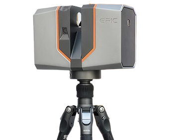
- Scan Complete
- Point Cloud Registered
- BIM Ready
- Digital Twin Enabled
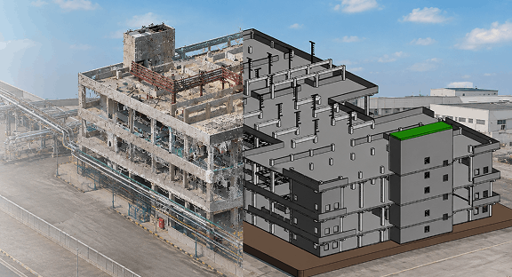
What is an As-Built Condition Scanning?
An As-Built Conditions Scanning is the process of accurately documenting the current physical state of a facility, building, infrastructure asset, or industrial plant before any design, renovation, expansion, demolition, or construction work begins.
Using advanced Reality Capture technologies, millions of precise measurements are collected to produce an accurate digital record of the site.
This digital record becomes the "single source of truth" for architects, engineers, contractors, owners, and facility managers throughout the project lifecycle.
Why As-built Conditions Matter
Many engineering projects fail because existing site condition information is incomplete or inaccurate.
Common problems include:
Outdated
Drawings
Missing
Dimensions
Unknown Pipe
Routing
Structural
Changes
Equipment
Relocation
Manual Error
Reduction
Our As-Built Conditions Scanning Workflow
Project Consultation
Reality Capture
Point Cloud Registration
Quality Assurance
CAD / BIM / Digital Twin
Project Delivery
Technologies We Use
Depending on your project, we select the most suitable Reality Capture technology.
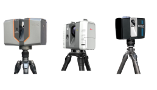
TERRESTRIAL LIDAR
IDEAL FOR: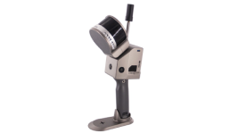
MOBILE SLAM
PERFECT FOR: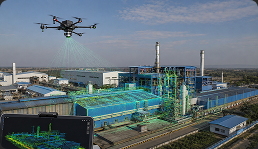
DRONE LIDAR
BEST SUITED FOR: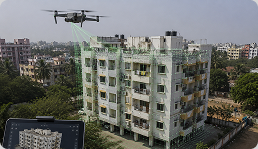
DRONE PHOTOGRAMMETRY
IDEAL FOR:Ideal For
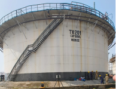
BROWNFIELD PROJECTS
Existing industrial facilities often undergo decades of modifications that are never reflected in original drawings. Our As-Built Conditions Surveys capture the true site geometry before retrofit engineering begins.
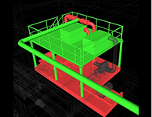
PLANT EXPANSION
Before adding new production lines, equipment, or utilities, accurate documentation of the existing facility is essential.
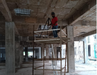
FACILITY RENOVATION
Capture buildings before renovation to support architects, engineers, contractors, and project managers.
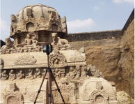
HISTORICAL DOCUMENTATION
Create permanent digital archives of historically significant buildings and monuments.
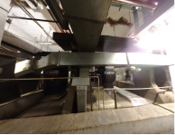
INFRASTRUCTURE UPGRADES
Document transportation, utilities, and civil infrastructure before modernization or rehabilitation.
Engineering Deliverables
Every As-Built Conditions Survey can generate multiple engineering outputs.
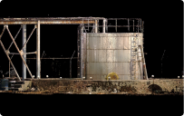
Reality Capture
- Registered Point Clouds
- Colorized Point Clouds
- Panoramic Images
- Reality Meshes
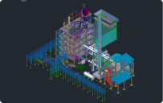
CAD Deliverables
- Floor Plans
- Elevations
- Sections
- Equipment Layouts
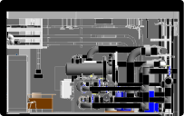
BIM Deliverables
- Revit Models
- IFC Models
- LOD Models
- Plant3D Models
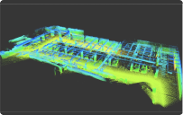
GIS Deliverables
- Utility Mapping
- Indoor GIS
- Asset Locations
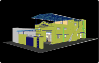
Digital Twin
Deliverables
- Factory Digital Twin
- Facility Digital Twin
- QR Asset Database
Benefits of As-Built Conditions Scanning
Accurate Design Foundation
Design using verified site conditions rather than outdated drawings.
Reduced Rework
Identify conflicts before construction begins, minimising costly changes during execution.
Faster Engineering
Engineers work with complete digital information instead of repeated site visits.
Improved Safety
Capture hazardous or difficult-to-access areas without extensive manual measurements.
Better Collaboration
Share accurate digital models with architects, engineers, contractors, owners, and stakeholders.
Long-Term Asset Value
The captured data becomes a reusable digital record for future maintenance, renovations, and Digital Twin initiatives.
Why Choose WildPlantTS?
Engineering-Driven Approach
We focus on engineering outcomes, not just data collection.
Multi-Technology Expertise
We combine Terrestrial LiDAR, Mobile SLAM, Drone LiDAR, and Photogrammetry based on project requirements.
Complete Digital Engineering
From Reality Capture to BIM, CAD, GIS, and Digital Twins, we deliver the complete workflow.
Nationwide Project Delivery
From Reality Capture to BIM, CAD, GIS, and Digital Twins, we deliver the complete workflow.
Ready to Capture Your As-Built Conditions?
Whether you're renovating a building, expanding a factory, modernizing infrastructure, or planning a brownfield retrofit, WildplantTS provides accurate As-Built Conditions Scanning that become the foundation for successful engineering and construction projects.
Frequently Asked Questions
It provides an accurate digital record of the current site, reducing design errors, construction clashes, and costly rework.
The choice depends on your project. We may use Terrestrial LiDAR for high-accuracy industrial facilities, Mobile SLAM for rapid indoor mapping, Drone LiDAR for large outdoor sites, or combine multiple technologies.
Yes. We provide Scan to BIM, Revit models, IFC models, CAD drawings, Plant3D models, and Digital Twin deliverables.
Yes. Many projects can be completed with minimal disruption to ongoing operations.
Yes. We specialize in non-contact documentation of heritage structures, monuments, museums, and culturally significant sites.